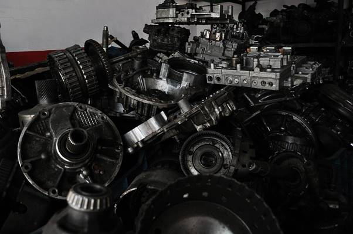

Работники отрасли обслуживания и ремонта автомобилей постоянно пользуются разношерстными базами данных кросс-номеров. Однако, отсутствие в открытом доступе столь важной информации в хорошо структурированном виде тормозит развитие бизнеса и совершенно не способствует росту доверия клиентов.
Кросс-номера – это информация, которая помогает найти взаимозаменяемость деталей аналогичным оригинальным по своим свойствам и качествам. Это значит, что любая дорогостоящая оригинальная запчасть может быть заменена аналогом, без изменений технических характеристик транспортного средства.
Запчасти-аналоги стоят дешевле и поэтому доступны широкому кругу автовладельцев. В любом специализированном автомагазине клиенту предложат несколько вариантов заменителей. Причем продавец имеет возможность сделать запрос информации прямо на кассе, что значительно упрощает его работу. Достаточно ввести в базу OEM-номер или название запчасти и марки автомобиля, и получить нужную информацию о наличии товара на сайте магазина или у представителей партнерской сети.

Чтобы оказать покупателю своевременную помощь в поиске запасных частей, менеджеру необходимо иметь под рукой базу кросс-номеров. Обширную информацию о заменяемости деталей различных моделей автомобилей удержать в голове просто невозможно. Поэтому наличие электронной базы кросс-номеров значительно упрощает как поиск детали, так и консультацию клиента.
Одни и те же запчасти поставляются совершенно разными производителями, при этом номера могут отличаться, а это значит, что дать однозначный ответ о том, какие из них взаимозаменяемы весьма трудно. База кроссов решает эту проблему и позволяет быстро выполнять следующие действия:
Для создания хорошего каталога запчастей, взаимосвязанных между собой, требуется много времени и знаний. В компаниях, составляющих базы кроссов, есть специальный отдел, где анализируется информация о взаимозаменяемости продукции всех производителей автозапчастей. Эксперты такого отдела ежедневно работают над тем, чтобы обновлять и пополнять базу кроссов.
В настоящий момент уже множество компаний пользуются базами кроссов, которые доступны в сети. Но такие базы не отвечают высоким стандартам качества, так как информация от производителей запчастей постоянно обновляется, а базы создаются один раз и зачастую не содержат актуальной информации по всем деталям. Эту проблему решает сервис Vehicle.by. Что он предлагает?
Сегодня база кроссов Vehicle содержит несколько миллионов номеров и полностью открыта для клиентов.
|
Знаете ли вы, что: Сайт Webhamster.Ru принимает заявки по размещению качественных статей на русском языке с информацией о товарах и услугах. Информация для связи с администрацией находится внизу главной сраницы |